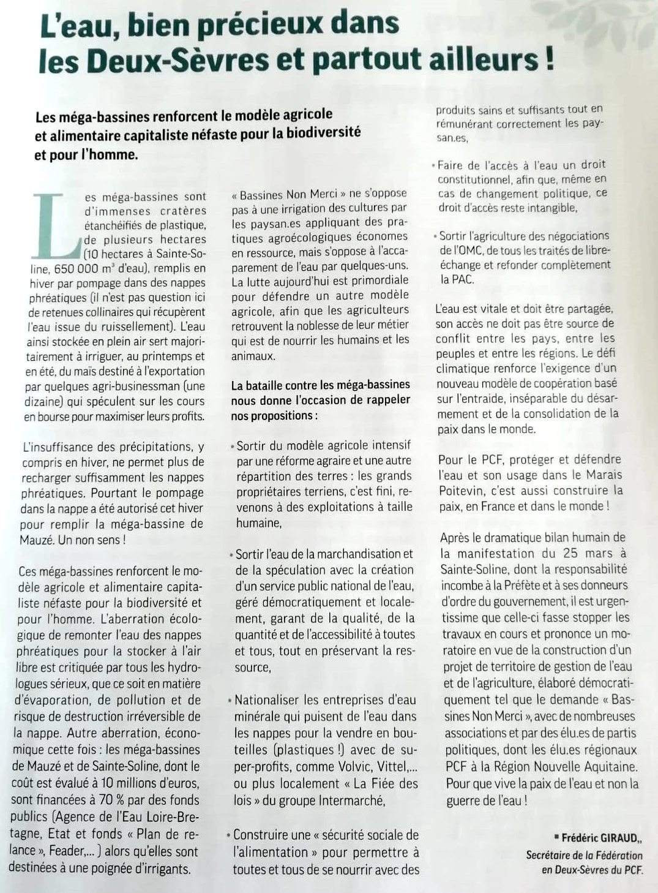

Publication d’archives
Pour un moratoire, pour que vive la paix de l'eau et non la guerre de l'eau !
Date indiquée par Facebook · 28 avril 2023
Texte conservé avec la publication
Contexte du dossier
Le 28 avril, une publication présente dans La Terre un appel au moratoire et à la paix de l’eau. Le 23 mai, un dossier de L’Humanité est relayé pour ses critiques d’une proposition sénatoriale : pesticides, retenues encouragées et enjeux sanitaires écartés, selon la légende. Un partage mis à jour le 14 juin soutient parallèlement une pétition contre l’arasement des barrages du Thouet. Ses auteurs défendent des petites réserves et demandent des réunions dans trois départements ; ils invoquent les effets qu’ils disent avoir constatés sur l’Argenton après 2018. Leur interprétation hydrologique demeure une argumentation pétitionnaire, sans validation scientifique apportée par l’export. Ces pièces montrent que le débat porte aussi sur les alternatives d’aménagement et leur discussion publique.

Sources
Archive rouge · export Facebook · AR-0002-FB-01673
À lire aussi · La question cruciale du revenu paysan .